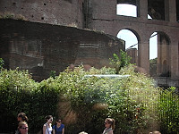

Victor Emmanuel Monument |

Santa Maria di Loreto |
"Mind of Leonardo" exhibition advertised. |

"Mind of Leonardo" exhibition advertised. |
|
Ancient and Modern Together |

Palace or temple in the Roman Forum. |
Monument to Gaius Cestus |
Monument to Gaius Cestus |
|
St. Peter's Basilica with part of dome showing. |

Johnnie with St. Peter's Basilica in the background with a bit of the dome showing. |
Johnnie seeking some shade. |

St. Peter's Square |